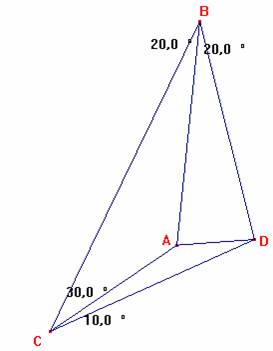

Problema 109
En la figura: Es el triángulo BCD, con A en el interior tal que:
< CBA = < ABD = 20º, < BCA = 30º, < DCA =10º.
Calcular < BDA, y demostrar que AB=BD.
Propuesto por Juan Carlos Salazar, Profesor de Geometría del Equipo Olímpico de Venezuela.
(Puerto Ordaz)
Salazar, J.C. (2003): Comunicación personal.

Solución de F. Damián Aranda Ballesteros profesor de Matemáticas del IES Blas Infante en Córdoba (5 de julio de 2003)Como quiera que en el punto A concurren las cevianas CA, DA y BA se tendrá, por el Teorema de Menelao, la siguiente relación:
; donde x =<BDA
Despejando:
. En definitiva:
sen (100-x) = 2×senx×sen10 (1)
Observamos que, en efecto, para x=80 se verifica (1).
Veamos que para otro valor x¹80 no se verifica la anterior ecuación.
Sea x= 80+a,
y sustituyamos este valor en (1). De este modo, obtenemos:
sen (20-a) = 2×sen(80+a)×sen10
sen20×cosa - cos20×sena = 2×(sen80×cosa + cos80×sena)×sen10 = 2 sen10 cos10 cosa + 2 sen10 sen10 sena
cos20×sena + 2 sen10 sen10 sena = 0
(cos210 - sen210 +2×sen210 )×sena=0; (cos210 + sen210)×sena = 0; sena=0 Þ a=0
En definitiva, el ángulo x=80 y así el triángulo BAD es isósceles, siendo AB=BD, c.q.d.
Saludos de F. Damián Aranda Ballesteros.